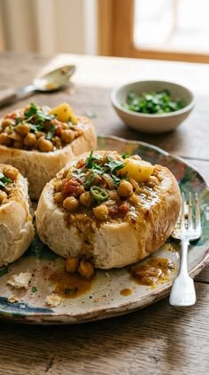

Southern Africa · South Africa
Bunny Chow
Durban's famous street food: spicy curry served inside a hollowed-out loaf.
About this dish
Bunny chow was born in Durban, created by the city's Indian South African community. A hollowed-out loaf of bread becomes an edible bowl for a fragrant curry of chicken, lamb or beans. Despite the name, there is no rabbit in it! You eat it with your hands, tearing the bread to mop up the sauce.
Ingredients
Servings:
- 600 g boneless chicken thighs, cubed
- 2 onions, chopped
- 4 garlic cloves, minced
- 1 tbsp grated fresh ginger
- 2 tbsp curry powder
- 1 tsp garam masala
- 2 tbsp vegetable oil
- 1 can chopped tomatoes (400 g)
- 2 medium potatoes, cubed
- 1.5 cups water
- 1 unsliced white loaf, cut into quarters
- Fresh coriander and salt to taste
Cooking instructions
Step-by-step method
- Heat the oil and fry the onions for 8 minutes until golden. Add garlic and ginger and cook for 1 minute.
- Stir in the curry powder and garam masala and toast for 30 seconds until fragrant.
- Add the chicken and brown lightly, then add the tomatoes, potatoes, water and salt.
- Simmer, partly covered, for 35-40 minutes until the chicken and potatoes are tender and the sauce is thick.
- Hollow out each bread quarter, keeping the removed bread as a lid.
- Fill with curry, top with coriander, and serve with the bread lid on the side.
Chef's tips
Taste and adjust the seasoning at the end. Use the servings buttons above to scale the ingredients, and keep the heat low whenever a recipe says to simmer.
Watch a tutorial
Video not loading? Watch on YouTube.
Nutrition facts
| Nutrient | Amount |
|---|---|
| Calories | 610 kcal |
| Protein | 35 g |
| Carbohydrates | 70 g |
| Fat | 20 g |
| Fibre | 5 g |
Where it comes from: South Africa
More recipes to try
- Jollof Rice (Nigeria)
- Injera (Ethiopia)
- Chicken Tagine (Morocco)
- Isombe (Rwanda)